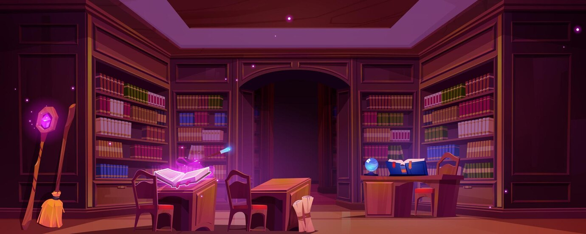
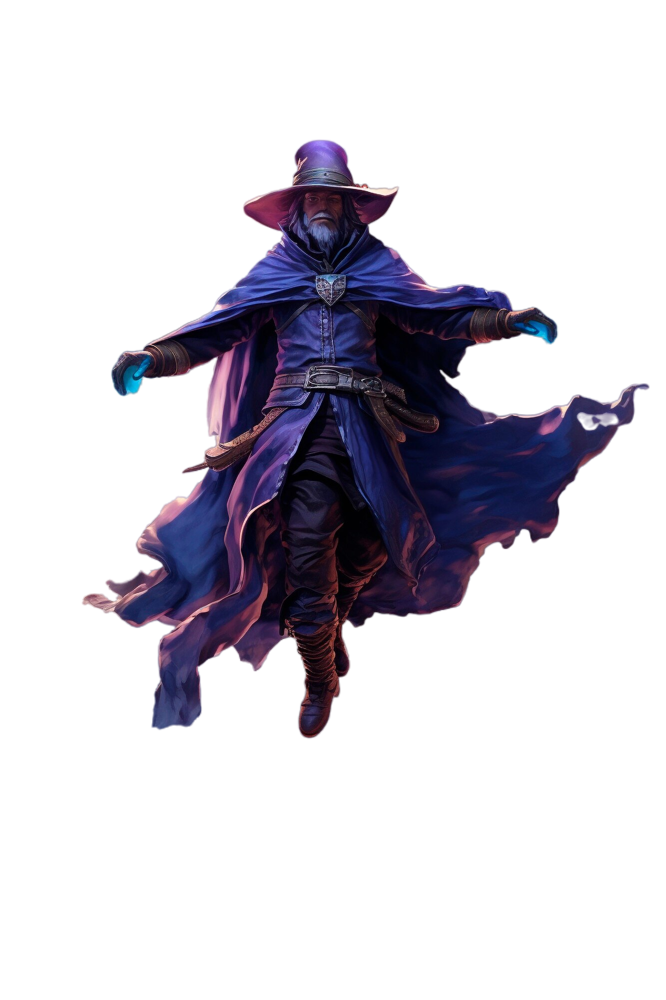
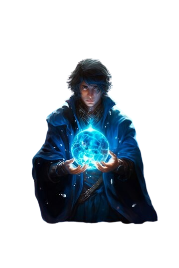
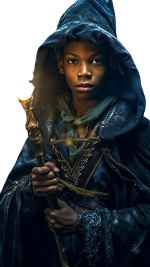

As profundezas do senac
"As profundezas do Senac" é um jogo de aventura e estratégia onde os jogadores assumem o
controle de três jovens heróis em uma missão para desvendar os segredos de uma misteriosa escola de
magia. Com seis fases emocionantes, cada uma com duas rotas diferentes, os jogadores enfrentarão
desafios únicos enquanto exploram os corredores encantados do Senac. À medida que avançam,
encontrarão os temíveis vilões que tentarão detê-los, culminando em batalhas épicas para derrotá-los e
desvendar os mistérios por trás da escola.
Seis Fases Desafiadoras: Cada fase apresenta ambientes únicos, que vão desde salas de aula encantadas
até laboratórios mágicos e jardins exuberantes. Os jogadores devem escolher entre duas rotas diferentes
em cada fase, cada uma com seus próprios desafios e recompensas.
Os jogadores devem explorar cuidadosamente cada fase, procurando por itens
mágicos, resolvendo quebra-cabeças e enfrentando desafios que testarão suas habilidades estratégicas.

Batalhas contra Vilões: A partir da quarta fase, os jogadores começam a enfrentar os três vilões:
Professor Zephyrus, Professora Pyra e Professor Aquarius. Cada um possui suas próprias habilidades
únicas e estratégias de batalha, tornando cada encontro uma experiência desafiadora.
Progressão do Personagem: Ao longo do jogo, os jogadores podem desenvolver as habilidades dos três
heróis, desbloqueando novos feitiços e poderes que os ajudarão em sua jornada.

PERSONAGENS
Barbosa é um jogador determinado, sempre em busca de desafios para superar. Ele vê o Senac
como
uma oportunidade de provar sua habilidade e alcançar o topo dos rankings. Com suas habilidades em
controle digital, ele enfrenta os desafios do jogo com confiança, procurando constantemente maneiras de
melhorar e superar obstáculos.

Rodrigo é um competidor astuto, que vê o Senac como um campo de jogo para mostrar sua
inteligência e habilidade estratégica. Ele é rápido em pensar e habilidoso em encontrar soluções
criativas para os desafios que enfrenta. Com suas habilidades em ilusão digital, ele é capaz de enganar
seus oponentes e avançar rapidamente no jogo.

Julio, por outro lado, é um jogador social, mais interessado em fazer amigos e se divertir do que em
competir pelo topo dos rankings. Ele traz leveza e humor para o jogo, mantendo o moral alto e a
atmosfera descontraída mesmo nos momentos mais desafiadores. Com suas habilidades de suporte digital,
ele ajuda não só a si mesmo, mas também seus colegas de classe, tornando-se uma presença valorizada no
Senac.
Personalidade: Pyra é uma professora apaixonada e determinada, que acredita no poder da tecnologia para
criar e destruir. Ela é impulsiva e vingativa, disposta a fazer qualquer coisa para alcançar seus
objetivos, mesmo que isso signifique causar danos aos outros.
Poderes e Habilidades: Pyra é uma especialista em programação de fogo, capaz de criar programas e
códigos incendiários que destroem sistemas e causam caos. Ela pode lançar ataques de chamas digitais que
queimam e destroem tudo em seu caminho, usando sua habilidade para causar estragos nos planos de seus
inimigos.
Personalidade: Zephyrus é um professor enigmático e arrogante, que acredita na supremacia da tecnologia
sobre a magia. Ele é manipulador e calculista, usando sua inteligência afiada para subjugar aqueles que
considera inferiores.
Poderes e Habilidades: Zephyrus é um mestre na arte da manipulação de dados e sistemas digitais. Ele
pode controlar o clima digital, criando tempestades de dados e interferências que prejudicam seus
inimigos. Além disso, ele é capaz de hackear sistemas e dispositivos com facilidade, usando suas
habilidades para espionar e sabotar seus oponentes..